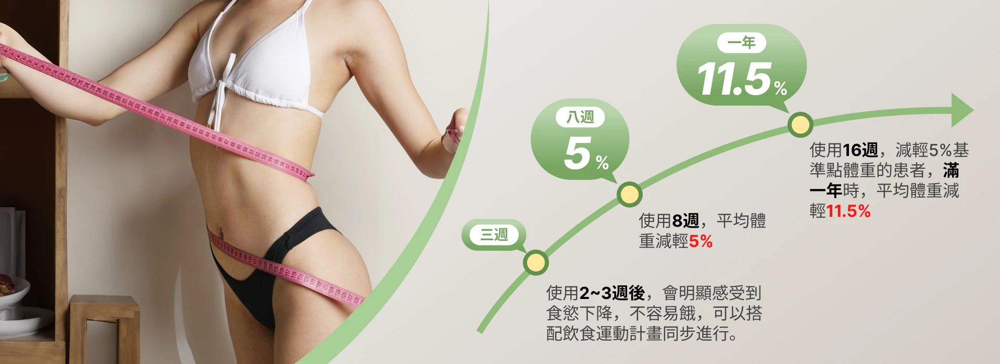

善纖達
 善纖達介紹
善纖達介紹
善纖達(俗稱瘦瘦筆、小藍筆)，主要成分為GLP-1 (類升糖素胜肽 - 1)，主要作用原理是讓人抑制食慾、減緩胃部排空的速度，讓食物停留於胃部時間拉長進而增加飽足感，減少食物攝取量，進而幫助降低體重、減少內臟脂肪。
善纖達如何幫助減重？
人體內源性GLP-1半衰期僅2分鐘，善纖達成分為GLP-1類似物，與人類GLP-1高達97%相似度，它是一種天然的荷爾蒙，會因進食而釋放，做為調節食慾的生理分子。
善纖達特色
台灣衛福部核准
安全性高
８週平均減輕５％
彈性且人性化調整
有感減脂
改善合併症風險

善纖達效果

警語：網站內容僅作醫療資訊分享，治療效果因每個人體質而異，請先安排與醫師諮詢評估。
善纖達介紹
善纖達產品為一盒三入，每支筆的容量為3ml(毫升)。建議起始劑量為每日一次 0.6 mg，施打一週後可逐漸以每周為單位、每次再增加 0.6 mg，直至第五周起維持每日一次 3.0 mg 的施打劑量。
注射部位僅限皮下注射為主，可以選擇腹部(避開肚臍周圍 5cm處)、大腿或上臂，每次注射必須使用新的針頭。第一次使用善纖達注射時，會由專業人員親自示範操作步驟，不用擔心使用問題與技巧。
善纖達是否有副作用？
施打善纖達副作用為暫時性的，可能有以下狀況發生：便秘、嘔吐、腹瀉、食慾下降和低血糖等不適症狀，但通常在幾天或幾週後就會消退，並非所有人都會出現。
哪些人”不”適合使用善纖達?
懷孕、預備懷孕或哺乳婦女
個人或家族有甲狀腺髓質癌病史者
甲狀腺、肝、腎、胰臟有疾病症狀之患者需遵照醫囑謹慎使用
曾經對Liraglutide或任何賦形劑過敏者
急性過敏性反應及血管性水腫
本網頁以介紹醫療新知與衛教宣導為目的，非為廣告內容，並依據衛部菌疫輸字第001140號仿單說明。療程效果與方式等，需以醫師親自說明為準。提醒您善纖達皆為醫囑處方藥品，使用前請先與醫師諮詢。